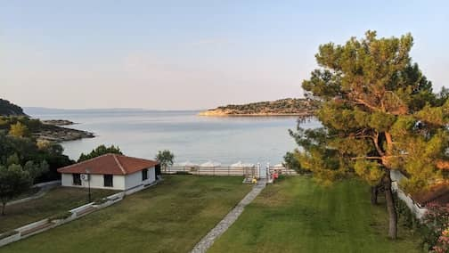
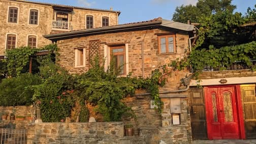
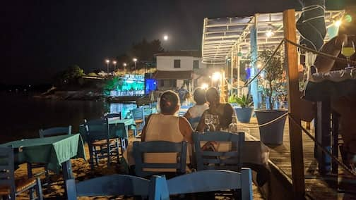
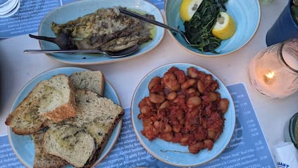
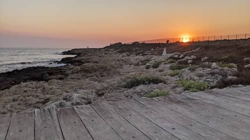
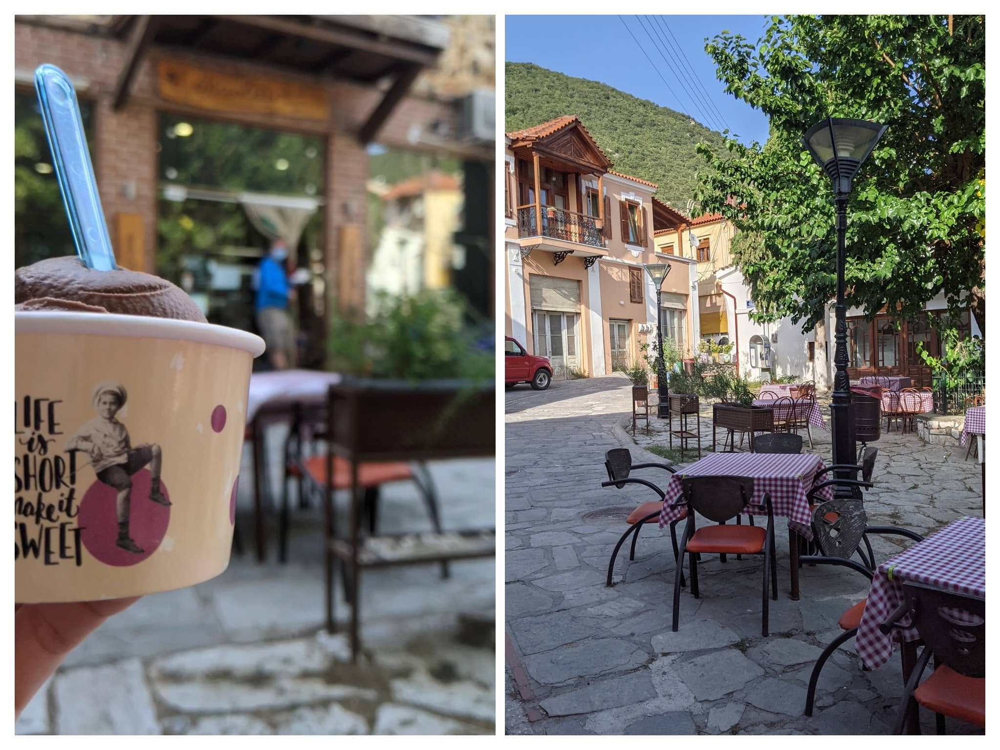
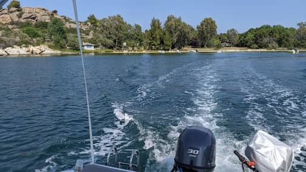
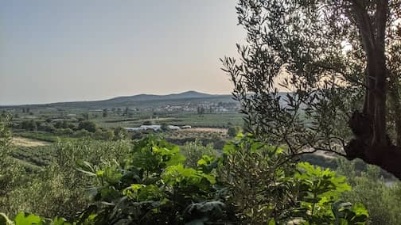

..
Greece and Cyprus
Jul 20 - Aug 5. Lagonisi, Greece. Cyprus
 Kalamaras Lagonisi Beach Apartments in Sithonia, Greece, our home base for 8 nights
 Lots of cute stone houses in the small village of Parthenonas
 My favorite thing to do in Greece is to enjoy casual dinners by the beach
 Delicious simple appetizers in Nikiti, Greece
 Paphos, Cyprus. I found kritamo or sea fennel growing everywhere here. We had it in a restaurant in Greece.
 We drove around and decided to stop at this cute little village of Galatista
 Our own boat rental to take us to secluded beaches
 We tried Commandaria at Linos Winery, Cyprus